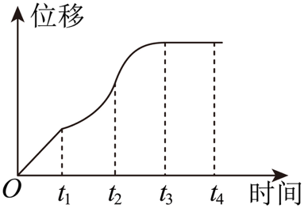

示例学校高二周测（1） Q1
题目

1．一辆汽车在笔直的公路上行驶，位移关于时间的函数图象如图所示，给出下列四个结论：①汽车在[0,t_1]时间段内每一时刻的瞬时速度相同；
②汽车在[t_1,t_2]时间段内不断加速行驶；
③汽车在[t_2,t_3]时间段内不断减速行驶；
④汽车在t_2时刻的瞬时速度小于t_4时刻的瞬时速度.
其中正确结论的个数有（ ）
A．1个 B．2个 C．3个 D．4个
答案与解析
1．C【详解】①在[0,t_1]时间段内，位移是一条斜率大于零的直线，则汽车在该时间段内匀速行驶，汽车在[0,t_1]时间段内每一时刻的瞬时速度相同，故①正确；
②在[t_1,t_2]时间段内，位移是一条斜率越来越大的曲线，则汽车在该时间段内不断加速行驶，故②正确；③在[t_2,t_3]时间段内，位移是一条斜率越来越小的曲线，则汽车在该时间段内不断减速行驶，故③正确；④汽车在t_2时刻的瞬时速度为0，在[t_3,t_4]时间段内，位移不变，则汽车在该时间段内静止不动故t_4时刻的瞬时速度为0，故④不正确．故选：C．
结构化摘要
{
"question_id": "szzx_2024_g2_week1_q001",
"answer": "C",
"assets": [
{
"id": "img001",
"type": "image",
"rel_id": "rId8",
"source": "word/media/image1.png",
"path": "assets/szzx_2024_g2_week1_q001_image_01.png"
}
],
"ole_objects": [],
"extraction": {
"source_paragraph_range": [
3,
9
],
"solution_paragraph_range": [
2,
3
],
"formula_count": 12,
"image_count": 1,
"ole_count": 0,
"quality_flags": [
"contains_images",
"contains_omml"
]
}
}